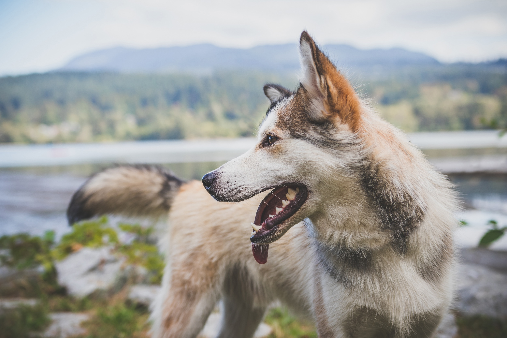

Le petit torrent tumultueux devient une rivière qui s’assagit à mesure que son cours s’élargit. L’eau traverse des terres humides qui déplaisent aussitôt au loup gris. Une odeur l’attarde pourtant dans les marécages.

Une meute est passée par là...
Le loup gris repère des traces de pattes dans la boue et se décide à les suivre jusqu’à un petit attroupement.
Des loups, des louves et de petits louveteaux qui pataugent gaiement dans les flaques. Le chef de meute t’aperçoit et gronde un avertissement.
Il est immense et noir, mais son poil raréfié a perdu de son luisant et se mouchette de touffes grises. Tu décides de tenter ta chance.
Quel combat ! Tu as l’avantage de la jeunesse et ta fougue te fais prendre le dessus mais le loup noir parvient à te croquer un bout d’oreille.
Ton atome de carbone disparaît dans sa gueule.
Vaincu, le loup noir claudique au loin, mâchouillant cette maigre consolation tandis que le loup gris triomphe auprès de sa nouvelle meute.
Ton atome de carbone se logera dans un poil gris du vieux loup qui, à la fin de sa vie, s’écroule dans une tourbière.
Cet environnement marécageux est humide et pauvre en oxygène.
De petites bactéries s’activent autour de la dépouille. Elles sont venues décomposer le corps.
Mais en l’absence d’oxygène, elles ont du mal à le décomposer, de même que le feu a besoin d’un filet d’air pour brûler le bois dans la cheminée…
Un certain type de bactéries spécialisées n’a pourtant pas besoin de respirer de l’oxygène pour se mettre au travail.
Ces bactéries méthanogènes décomposent le corps du vieux loup et brisent ses longues chaînes de carbone non pas en dioxyde de carbone (CO2), mais en petites molécules de méthane (CH4).
Le résultat est le même, le méthane rejoint l’atmosphère.
Ton atome de carbone finira son voyage, à grésiller dans le ciel accroché à trois autres atomes de carbone sous forme de méthane…
C’est un gaz à effet de serre, comme le CO2.
Mais il est 20 fois plus efficace ! C’est-à-dire qu’il absorbe 20 fois plus de rayonnement émis par la planète Terre vers l’espace, et le renvoie vers la surface, ce qui la réchauffe.
Le méthane participe ainsi au réchauffement climatique.
Ce terrible gaz à effet de serre est émis par les tourbières et toutes les zones humides où s’activent les bactéries méthanogènes.
Mais aussi par les vaches, qui rotent à tout bout de champ, notamment lorsque l’élevage intensif leur fournit une nourriture inadaptée.
Et enfin, par la fermentation des
déchets organiques dans les décharges... D'où l'idée de recycler, de composter ses déchets et de limiter la viande de supermarché ! :)